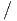
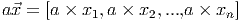
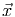
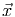
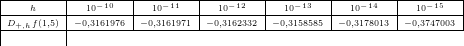
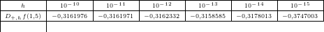

Considere o problema de calcular a área entre uma função positiva, o eixo x e as retas x = a e x = b. O valor exato dessa área é calculada fazendo uma aproximação por retângulos com bases iguais e depois tomando o limite quando o número de retângulos tende ao infinito:
 é o tamanho da base dos retângulo e f(xi), 1 ≤ i ≤ n,
a + (i- 1)h ≤ xi ≤ a + ih, é a altura dos retângulos. Essa definição é generalizada para
cálculo de integrais num intervalo [a,b]:
é o tamanho da base dos retângulo e f(xi), 1 ≤ i ≤ n,
a + (i- 1)h ≤ xi ≤ a + ih, é a altura dos retângulos. Essa definição é generalizada para
cálculo de integrais num intervalo [a,b]:

Os valores aproximados para a integral são dados na seguinte tabela:
| h1 = 2 | h2 = 1 | h3 = 0,5 | h4 = 0,25 | |
| ∫ 02(x2 + 1)dx | h 1f(1) = 4 | h2f(0,5) + h2f(1,5) = 4,5 | 4,625 | 4,65625 |
![[ ]
∫ 2 2 x3 2 8
(x + 1)dx = ---+ x = --+ 2 = 4,6666667
0 3 0 3](main2006x.png) |
A integral de uma função num intervalo [a,b], também chamada de quadratura numérica, é aproximada pela soma:
 |
onde xi, 1 ≤ i ≤ n, são pontos distintos do intervalo [a,b]. Nesta definição, a integral ∫ 02(x2 + 1)dx usando uma aproximação por retângulo usa apenas um   ponto, o ponto médio do intervalo (x1 = 1), e a soma se reduz a uma parcela ((2 - 0)f(1)). A fórmula geral para essa caso, chamado de regra do ponto médio é:
 | (7.7) |
A regra do ponto médio (7.7) pode ser deduzida mais formalmente usando a expansão de Taylor


![∫ b ∫ b ∫ b1
f(x)dx = hf (x1 ) + f ′(x1) (x - x1)dx + f ′′(η ) --(x - x1)2dx
a [a ] a 2
′ (x --x1)2 b ′′ [ 1- 3]b
= hf (x1 ) + f (x1) 2 + f (η) 6(x - x1)
[ a ] a
′ (b --x1-)2 (a---x1-)2-
= hf (x1 ) + f (x1) 2 - 2
[ ]
+ f′′(η) 1(b - x1)3 - 1(a - x1)3
6 6
h3f ′′(η)
= hf (x1 ) +--------.
3](main2015x.png)
Exemplo 7.3.1. Use a regra do ponto médio para aproximar a integral


Usando o intervalo [0,1], temos h = 1 e x1 = 1∕2. A regra do ponto médio resulta em


A forma natural de obter as regras de integração é usar o polinômio de Lagrange
que passa pelo pontos {(xi,f(xi))}i=1n
 


![∫ n [ ∫ ] ∫ n
b ∑ b ---1---- b ∏ (n+1)
a f(x)dx = f(xi) a Li(x)dx + (n + 1)! a (x - xi)f (ξ (x ))dx.
i=1 i=1](main2029x.png)

 

A regra do trapézio consiste em aproximar a integral por um trapézio em vez de um retângulo, como fizemos. Para isso, o polinômio de Lagrange deve ser uma reta, como mostra a figura.

O polinômio de Lagrange de primeira ordem que passa por (x0,f(x0)) := (a,f(a)) e
(x1,f(x1)) := (b,f(b)) é dado por


 |
Pelo teorema do valor médio, existe a ≤ η ≤ b tal que ∫ abf(ξ(x))g(x)dx = f(η) ∫ abg(x)dx e, portanto,
![∫ b [(x - x )2]x1 [(x - x )2]x1
f (x)dx = f(x0 ) ------0-- - f(x1) ------1--
a 2h x0 2h x0
f′′(η) [x3 x2 ]x1
+ ------ ---- --(x1 + x0) + x0x1x
2 3 2 x0
(x1 - x0 )2 (x0 - x1)2
= f(x0 )----------+ f (x1)----------
′′ ( 23h 2 2h 3 2 )
+ f-(η)- x1-- x1-(x + x ) + x x x - x0-+ x0(x + x ) - x x x
2 3 2 1 0 0 1 1 3 2 1 0 0 1 0
2 2
= f(x0 )h--+ f(x1) h--
2h 2h
f′′(η) 2x31 - 3x21(x1 + x0) + 6x21x0 - 2x30 + 3x20(x1 + x0) - 6x1x20
+ --2------------------------------6----------------------------
′′ ( )
= h-(f(x0) + f(x1)) + f-(η)- x30 - 3x20x1 + 3x21x0 - x31
2 12
h- h3f′′(η)-
= 2 (f(x0) + f(x1)) - 12](main2039x.png) |
Exemplo 7.3.2. Use a regra do trapézio para aproximar a integral


Usando o intervalo [0,1], temos h = 1, x0 = 0 e x1 = 1. A regra do trapézio resulta em


A regra de Simpson consiste em aproximar a integral usando três pontos do intervalo:

 |
Se usarmos o mesma metodologia da regra dos trapézios, calcularemos


![∫ b [ 2 ′′
f(x)dx = f(x1)(x - x1) + f′(x1)(x---x1)-+ f-(x1)(x - x1 )3
a 2 6
f ′′′(x ) ]x2
+ -----1-(x - x1)4
24 x0
1 ∫ x2
+ --- f(4)(ξ(x))(x - x1)4dx,
24 x0](main2057x.png) |
Pelo teorema do valor médio, existe x0 ≤ η ≤ x2 tal que
![∫ b [ (x - x )2 f′′(x )
f(x)dx = f(x1)(x - x1) + f′(x1)------1--+ ----1-(x - x1 )3
a 2 6
f′′′(x1) ]x2
+ -------(x - x1)4
24 x0
f(4)(η) ∫ x2
+ ------- (x - x1 )4dx
[ 24 x0
′ (x---x1)2 f′′(x1)- 3
= f(x1)(x - x1) + f (x1) 2 + 6 (x - x1 )
′′′ ]x2
f--(x1) 4
+ 24 (x - x1)
(4) x0
f--(η)-[ 5]x2
+ 120 (x - x1) x0
<img
src=](main2060x.png)
 " class="math-display" >
" class="math-display" > |
Usando o fato que


Exemplo 7.3.3. Use a regra de Simpson para aproximar a integral


Usando o intervalo [0,1], temos h = 1∕2, x0 = 0, x1 = 1∕2 e x2 = 1. A regra de Simpson resulta em


Vimos que em todas as estimativas de erro que derivamos, o erro depende do tamanho do intervalo de integração. Uma estratégia para reduzir o erro consiste em particionar o intervalo de integração em diversos subintervalos menores:
 |


onde xi = a + (i - 1)h, h = (b - a)∕n e i = 1,2,…,n + 1, sendo n o número de subintervalos da partição do intervalo de integração. Depois, aplica-se um método simples de integração em cada subintervalo.
A regra composta dos trapézios assume a seguinte forma:
![∫ b ∑n ∫ xi+1
a f(x)dx = x f(x)dx
i=1 i
∑n xi+1---xi
≈ 2 [f (xi) + f(xi+1)]
i=1](main2083x.png)
![∫ b h N∑i
f(x)dx ≈ -- [f (xk) + f(xk+1)]
a 2k=1
h
= -[f(x1 ) + 2f (x2 ) + 2f (x3) + ⋅⋅⋅ + 2f(xNi) + f(xNi+1 )]
2
h- N∑i
= 2 [f(x1 ) + f (xNi+1 )] + h f(xi)
i=2](main2084x.png)
O código Scilab abaixo é uma implementação do método do trapézio composto para calcular:
![∫ b h- ∑n 3
a f(x )dx = 2 [f(x1) + f(xn+1)] + h f (xi) + O (h ),
i=2](main2087x.png) |
onde h = (b - a)∕n e xi = a + (i - 1)h, i = 1,2,…,n + 1. Os parâmetros de entrada são: f o integrando definido como uma função no Scilab, a o limite inferior de integração, b o limite superior de integração, n o número de subintervalos desejado. A variável de saída é y e corresponde a aproximação calculada de ∫ abf(x)dx.

Já a regra composta de Simpson assume a seguinte forma:
![∫ n ∫
bf (x)dx = ∑ xk+1f(x )dx
a k=1 xk
n [ ( ) ]
≈ ∑ xx+1----xk f (x ) + 4f xk+1-+-xk- + f(x )
k=1 6 k 2 k+1](main2090x.png)
|
|
onde, agora, h = (b - a)∕(2n), xi = a + (i - 1)h, i = 1,2,…,2n + 1.
O código Scilab abaixo é uma implementação do método de Simpson composto para calcular:
![∫ b [ n∑-1 ∑n ]
f(x )dx = h- f(x1 ) + 2 f(x2i+1) + 4 f (x2i) + f(x2n+1) + O (h3),
a 3 i=1 i=1](main2094x.png) |
onde h = (b - a)∕(2n) e xi = a + (i - 1)h, i = 1,2,…,2n + 1. Os parâmetros de entrada são: f o integrando definido como uma função no Scilab, a o limite inferior de integração, b o limite superior de integração, n o número de subintervalos desejado. A variável de saída é y e corresponde a aproximação calculada de ∫ abf(x)dx.
Exemplo 7.3.4. Calcule numericamente a integral


Solução.
| n | Ponto Médio | Trapézios | Simpson |
| 1 | 5,4365637 | 218,3926 | 76,421909 |
| 2 | 21,668412 | 111,91458 | 51,750469 |
| 3 | 31,678746 | 80,272022 | 47,876505 |
| 6 | 41,755985 | 55,975384 | 46,495785 |
| 12 | 45,137529 | 48,865685 | 46,380248 |
| 24 | 46,057757 | 47,001607 | 46,372373 |
| 48 | 46,292964 | 46,529682 | 46,37187 |
| 96 | 46,352096 | 46,411323 | 46,371838 |
O método de Romberg é um método simplificado para construir quadraturas de alta ordem.
Considere o método de trapézios composto aplicado à integral


 para algum Ni inteiro,
i.e.:
para algum Ni inteiro,
i.e.:

Teorema 7.3.1. Se f(x) é uma função analítica no intervalo (a,b), então a função I(h) admite uma representação na forma

Para um demonstração, veja [4]. Em especial observamos que


A ideia central do método de Romberg, agora, consiste em usar a extrapolação de Richardson para construir métodos de maior ordem a partir do métodos dos trapézios para o intervalo (a,b)
Exemplo 7.3.5. Construção do método de quarta ordem.


![h
I(h) = --[f (a ) + f (b)]
2
h- a-+-b
I (h ∕2) = 4 [f (a ) + 2f (c) + f(b)], c = 2](main2111x.png)
![4I (h∕2) - I(h) h h
--------------- = --[f(a) + 2f (c) + f(b)] --[f(a) + f(b)]
3 3 6
= h-[f(a) + 4f (c) + f(b)]
6](main2112x.png)
A partir de agora, usaremos a seguinte notação


Observamos que os pontos envolvidos na quadratura Rk,1 são os mesmos pontos envolvidos na quadratura R(k - 1,1) acrescidos dos pontos centrais, assim, temos a seguinte fórmula de recorrência:

Definimos Rk,2 para k ≥ 2 como o esquema de ordem quatro obtido da fórmula do exemplo 7.3.5:
Similarmente os valores de Rk,j são os valores obtidos pela quadratura de ordem 2j obtida via extrapolação de Richardson. Pode-se mostrar que

Exemplo 7.3.6. Construa o esquema de Romberg para aproximar o valor de ∫ 02e-x2dx com erro de ordem 8.
O que nos fornece os seguintes resultados:
| 55,59815 | 0,000000 | 0,000000 | 0,000000 |
| 30,517357 | 22,157092 | 0,000000 | 0,000000 |
| 20,644559 | 17,353626 | 17,033395 | 0,000000 |
| 17,565086 | 16,538595 | 16,484259 | 16,475543 |
Ou seja, temos:
 |


usando uma aproximação de ordem 8.
Exemplo 7.3.7. Construa o esquema de Romberg para aproximar o valor de ∫ 02x2ex2dx com erro de ordem 12.
O que nos fornece:
| 218,3926 | |||||
| 111,91458 | 76,421909 | ||||
| 66,791497 | 51,750469 | 50,105706 | |||
| 51,892538 | 46,926218 | 46,604601 | 46,549028 | ||
| 47,782846 | 46,412949 | 46,378731 | 46,375146 | 46,374464 | |
| 46,72661 | 46,374531 | 46,37197 | 46,371863 | 46,37185 | 46,371847 |
Ou seja, temos:
 |
com uma aproximação de ordem 12.
Todos os métodos de quadratura que vimos até o momento são da forma


![∫
b b---a
a f (x)dx ≈ [f(a) + f(b)] 2
b - a b - a
= ----- f(a) + -----f(b)
2 2
∑2
:= w1f (x1) + w2f (x2) = wjf (xj )
j=1](main2128x.png)


![[ ( ) ]
∫ b a + b b - a
f(x )dx ≈ f(a) + 2f ----- + f(b) -----
a 2 ( ) 4
b---a b --a a-+-b b --a
= 4 f (a) + 2 f 2 + 4 f(b)
∑3
:= w1f (x1) + w2f(x2) + w3f (x3) = wjf (xj)
j=1](main2129x.png)
![∫ b [ ( a + b) ] b - a
f(x)dx ≈ f(a) + 4f ----- + f(b) -----
a 2 ( )6
b - a 2(b - a) a + b b - a
= -----f (a ) + --------f ----- + -----f(b)
6 3 2 6
∑3
:= wjf (xj)
j=1](main2132x.png)


![∫ [ ( ) ( )
b 3a-+-b- a-+-b
a f(x)dx ≈ f(a) + 4f 4 + 2f 2
( ) ]
a-+-3b- b --a
+ 4f 4 + f(b) 12
( ) ( )
= b --af(a) + b---af 3a-+-b- + b---a f a-+-b
12 3 4 6 2
b - a (a + 3b ) b - a
+ -----f ------- + -----f (b)
3 4 12
∑5
:= wjf (xj)
j=1](main2135x.png)
A principal técnica que temos usado para desenvolver os métodos numéricos é o polinômio de Taylor:

Integrando termo a termo, temos:


Neste momento, é natural investigar o desempenho de um esquema numérico aplicado a funções do tipo f(x) = xn.
Definição 7.3.1. A ordem de precisão ou ordem de exatidão de um esquema de quadratura numérica como o maior inteiro positivo n para o qual o esquema é exato para todas as funções do tipo xk com 0 ≤ k ≤ n, ou seja, Um esquema é dito de ordem n se


Exemplo 7.3.10. A ordem de precisão do esquema de Simpson é 3:
![∫ b [ (a + b ) ] b - a ∑3
f(x)dx ≈ f(a) + 4f ----- + f(b) -----= wjf (xj)
a 2 6 j=1](main2150x.png)
 ,w2 = 4
,w2 = 4 , x1 = a, x2 =
, x1 = a, x2 =  e x3 = b
e x3 = b 


Exemplo 7.3.11. Encontre os pesos wj e as abscissas xj tais que o esquema de dois pontos


 Solução. Temos um sistema de quatro equações e quatro incógnitas dado por:
Solução. Temos um sistema de quatro equações e quatro incógnitas dado por:

Da segunda e quarta equação, temos:

 .
.
Esse esquema de ordem de precisão três e dois pontos chama-se quadratura de
Gauss-Legendre com dois pontos:


A quadratura de Gauss-Legendre de n pontos é o esquema numérico

![2
wj = (-----2)---′----2-.
1 - xj [P n(xj)]](main2170x.png)
| n | xj | wj |
| 1 | 0 | 2 |
| 2 | ± | 1 |
3 | 0 |  |
± |  |
|
4 | ± |  |
± |  |
|


Solução.
 |
No Scilab:
♢
Solução.


♢
Solução. Para tanto, fazemos a mudança de variáveis u = 2x - 1:
 |
E, então aplicamos a quadratura gaussiana nesta última integral.


♢


![∫ b ∑2
f (x)dx ≈ [f(a) + f(b)] b---a = wjf (xj)
a 2 j=1](main2145x.png)
 ,
, 
![|-----------|---------------|-------------|----------------|-------------------|
|---f(x)----|----Exato------|--Trap-ézio---|----Simpson-----|Gauss--Legendre-(2)-|
| | | | | |
| | | | -1 0 1 | √- √- |
| | e - e-1 | e- 1 + e | e---+-4e-+-e-- | e- -33 + e33 |
| ex | | | 3 | |
| | ≈ 2,35040 | ≈ 3,08616 | ≈ 2,36205 | ≈ 2,34270 |
| | | | | |
|-----------|---------------|-------------|----------------|-------------------|
| | | | | |
| | | | | |
| ∘ ------ | 16-- 4√2-- | | | |
|x2 3 + x3 | 9 9 | 3,41421 | 1,13807 | 1,15411 |
| | ≈ 1,14924 | | | |
| | | | | |
|-----------|---------------|-------------|----------------|-------------------|
| | | | | |
| | | | | |
| x2ex3 |e-e-1 ≈ 0,78347 | 3,08616 | 1,02872 | 0,67905 |
| | 3 | | | |
-------------------------------------------------------------------------------|](main2166x.png)